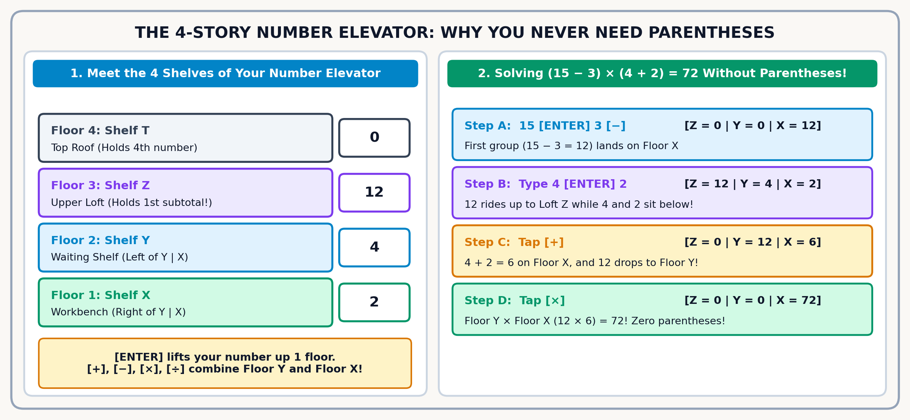
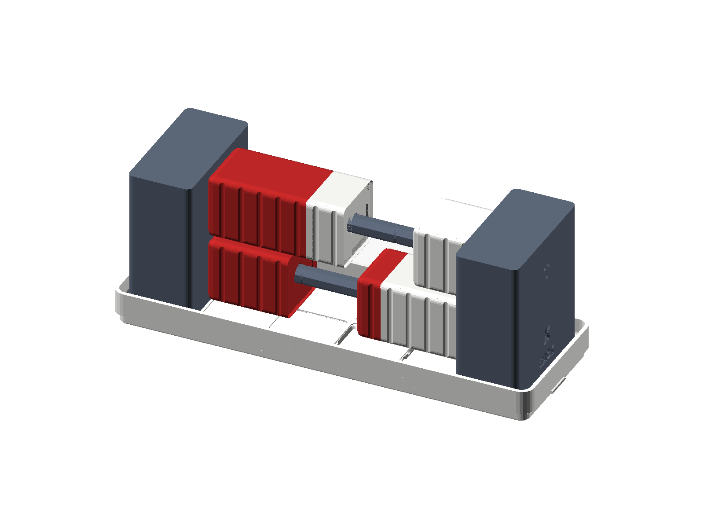
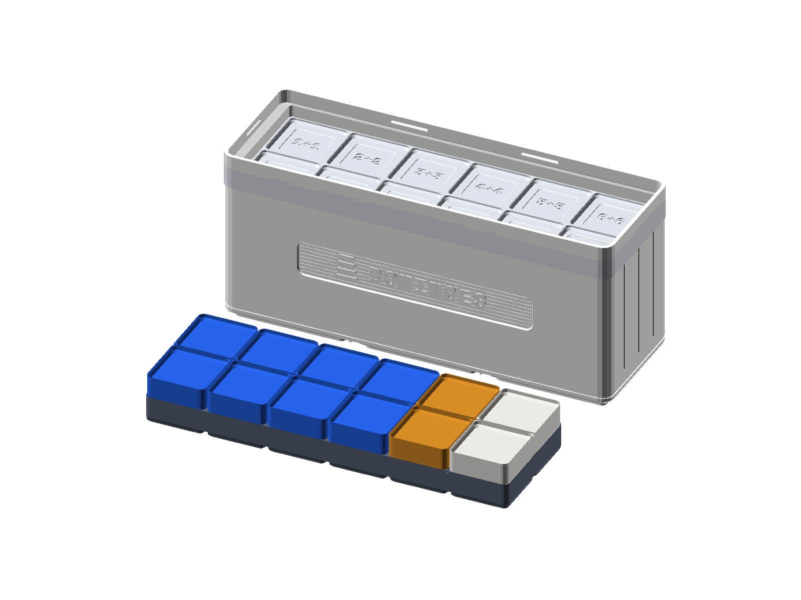
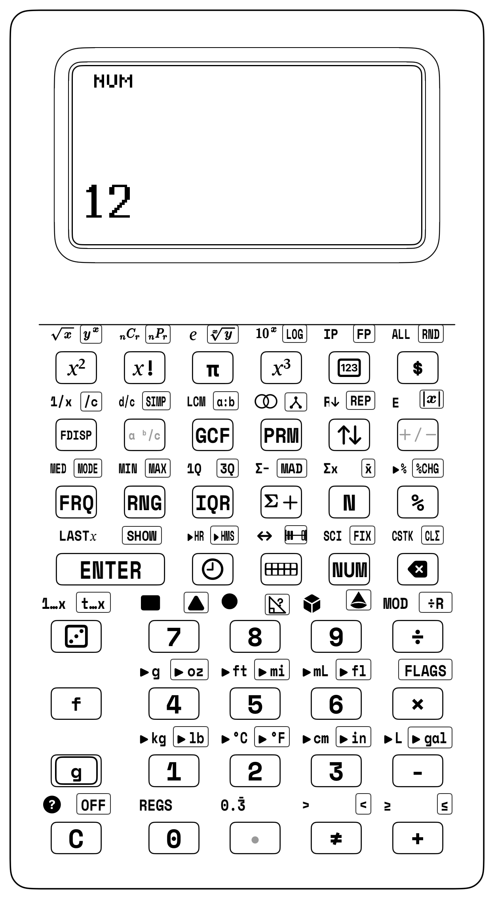

Chapter 2: Stacking Numbers Just Like Blocks
2.1 From Two Shelves to the 4-Shelf Number Stack
In the Preface and Chapter 1, you met the bottom two shelves of your StackCalc SC-6—Ground Shelf \(X\) and Waiting Shelf \(Y\)—and saw how they mirror the two rows of physical blocks in your desk tray.
Now a bigger question awaits: what happens when a real-world math puzzle has two or three separate groups happening at once—like balancing two block towers on your desk, combining two different sub-assemblies in a maker project, or working from the inside out on a multi-step challenge?
Try this quick balance puzzle with your Counting & Array Studio tiles first: $\(8 + 4 = \Box + 5\)$ Picture stacking 8 blue tiles and 4 gold tiles into a tower on the left side of your desk (\(8 + 4 = 12\) tiles high). Your friend places 5 red tiles right next to your tower and asks: "How many more tiles do I need on top of my 5 so our two towers stand at the exact same height?"
Watch how naturally that two-step story flows on your SC-6:
1. Build the left tower (8 + 4): Tap 8 [ENTER] 4 [+]. Instantly, 12 sits on Shelf \(X\).
2. Find the missing piece (12 - 5): Leave 12 right on the screen and type 5—which automatically lifts your 12 up onto Shelf \(Y\)—then tap [-] to see 7 tiles on Shelf \(X\)!
Why did that feel so effortless? Because your brain naturally solves multi-step problems by stacking one piece on top of another: - When you pack your backpack, you place your heavy binder on the bottom, then stack your notebook and lunchbox on top. - When you build a LEGO model, you snap together one small sub-assembly first, set it on the corner of your desk, build the second sub-assembly, and click the two halves together.
In 1924, a Polish mathematician named Jan Łukasiewicz discovered something remarkable: if you always put your numbers down first and apply the action key right after them, you never need a single parenthesis ( )—no matter how many steps a math problem has! Every finished piece simply waits on a shelf until you are ready to snap it together with the next piece.
Nearly fifty years later, in 1972, two California engineers named William Hewlett and David Packard challenged their team to build the world's first scientific calculator small enough to fit in a shirt pocket (the famous HP-35). Up to that day, scientists and astronauts had to slide wooden rulers called slide rules back and forth and scribble middle numbers on scrap paper—and if you lost your place halfway through a calculation, you had to start all over again.
Hewlett and Packard realized that if a pocket calculator used Jan Łukasiewicz's four-shelf stack (\(X, Y, Z, T\)) instead of parenthesis buttons and an = key, you could solve even the biggest rocket-science puzzle one small step at a time and never lose your place. If a long math problem on paper ever made you feel frustrated because you lost track of the middle steps, there was nothing wrong with your brain—you were just missing a visible workbench!
Over the next few pages, you will unlock all four shelves of that Number Elevator (\(X, Y, Z, T\)) and meet the everyday controls that drive it: the digit keys 0 through 9 for building numbers on Shelf \(X\), [ENTER] to lift a finished number upstairs, the four arithmetic action keys ([+], [-], [×], and [÷]), and a set of friendly navigation and undo keys ([<-] Backspace, [x⇄y] Swap, [f] [R↓] Roll Down, [g] [REP] Repeat, and [f] [LASTX] Recover Last Number).
2.1.1 Inside the 4-Shelf Number Stack
When you only have two numbers to combine, Ground Shelf \(X\) and Waiting Shelf \(Y\) are all you need. But what if you finish calculating the first half of a problem—say, \(15 - 3 = 12\)—and you need a safe place to park that 12 while you work on the second half (\(4 + 2 = 6\))?
Your SC-6 has two more waiting shelves upstairs—Shelf \(Z\) (the Third-Story Loft) and Top Shelf \(T\) (the Fourth-Story Roof Shelf):


| Elevator Shelf | Table Column Name | How This Shelf Helps You Build | Where You See It on Screen |
|---|---|---|---|
| Top Shelf \(T\) | Register T | The Repeat Shelf: Keeps a constant step size locked at the top for skip-counting ladders | Top shelf of the 4-story elevator |
| Shelf \(Z\) | Register Z | The Upper Waiting Shelf: Holds your first finished group while you build a second group below | Just above Shelf \(Y\) |
| Shelf \(Y\) | Register Y | The Waiting Shelf: Holds your first number ready to combine with Shelf \(X\) | Stacked right above Ground Shelf \(X\) |
| Ground Shelf \(X\) | Register X | Your Workbench: Every number you type and every answer you calculate appears right here | Bottom line of the screen in large bold digits |
2.1.2 The Three Golden Rules of Stack Math
- Type the First Number and Press
[ENTER]:
Whenever you tap digit keys (for example,3), that number appears on Ground Shelf \(X\) right before your eyes. When your first number is complete, tapping[ENTER]lifts it up onto Waiting Shelf \(Y\) (like an elevator rising one story), leaving a copy on the bottom shelf that is immediately replaced as soon as you type your next number. - Type the Second Number on Shelf \(X\):
As soon as you tap the next digit, your second number takes its place on Shelf \(X\) while your first number waits in plain view on Shelf \(Y\) right beside it. - Tap the Action Key Last (
+,-,×,÷):
When you tap an action key such as[+], the3on Shelf \(Y\) drops down and fuses with the4on Shelf \(X\), placing their combined sum7right onto the bottom shelf while Shelf \(Y\) resets cleanly to0. At that exact same moment, any number waiting upstairs on Shelf \(Z\) rides the elevator down into Shelf \(Y\), ready for its turn!
2.1.3 How Automatic Stack Lift Saves Your Answers
One of the friendliest habits of your SC-6 is automatic stack lift. Say you just added 4 [ENTER] 5 [+] and your answer 9 is sitting on Shelf \(X\). What happens when you start typing a new number, like 6?
You do NOT need to press [ENTER] first, and typing 6 will never erase your 9! Because the calculator knows 9 is a finished answer, the moment you touch 6, it automatically sends 9 up to Shelf \(Y\) (and pushes anything in Shelf \(Y\) up to Shelf \(Z\)) to make room for your 6 on Shelf \(X\):
| Elevator Shelf | Right After 4 [ENTER] 5 [+] |
The Moment You Touch 6 |
Ready for Your Next Action Key |
|---|---|---|---|
| Top Shelf \(T\) | \(0\) | \(0\) | \(0\) |
| Shelf \(Z\) | \(0\) | \(0\) | \(0\) |
| Shelf \(Y\) | \(0\) | \(9\) (Rides up automatically!) | \(9\) |
| Shelf \(X\) | \(9\) (Finished answer) | 6_ (New number begins) |
\(6\) |
2.1.4 How the Elevator Drops (and the Top-Shelf Secret)
Whenever you press a two-number action key (+, -, ×, ÷), all four shelves of the elevator move together in one smooth step:
1. The waiting number on Shelf \(Y\) combines with the active number on Shelf \(X\)—for example, in subtraction or division, Shelf \(Y\) always goes first: \(\text{Shelf } Y - \text{Shelf } X\) (\(12 - 5 = 7\)) or \(\text{Shelf } Y \div \text{Shelf } X\) (\(12 \div 4 = 3\)).
2. Their combined answer lands on Shelf \(X\).
3. Whatever was waiting on Shelf \(Z\) drops down into Shelf \(Y\).
4. Whatever was on Top Shelf \(T\) drops down into Shelf \(Z\)—and leaves a copy of itself behind on Top Shelf \(T\)!
Why does Top Shelf \(T\) leave a copy of itself behind every time the elevator drops? Because if you lock a step size (like 7) into Top Shelf \(T\), it will keep feeding fresh 7s down the elevator forever, letting you skip-count through your times tables (\(7, 14, 21, 28 \dots\)) with single taps of [+]!
2.1.5 Reading Your Stacked Shelves (\(Y\) Above \(X\))
When you write a column addition or subtraction story on paper, or stack two rows of blocks in your desk tray, the first number sits on the upper row and the second number sits right underneath it on the bottom row.
Your SC-6 daylight screen matches that exact physical layout by stacking Waiting Shelf \(Y\) right above Ground Shelf \(X\). Across the top status bar sit your mode indicators and battery icon; below them sit the waiting shelves (T:, Z:, and Y: in 4-shelf mode, or T: right above X in 2-shelf mode); and along the bottom edge of the screen in extra-large bold digits sits Ground Shelf \(X\). Waiting Shelf \(Y\) holds the first number you locked in with [ENTER] (like 12), and Ground Shelf \(X\) right below it shows the second number you are typing right now (like 4). Because 12 sits on the upper shelf and 4 sits on the lower shelf, reading down your screen from Shelf \(Y\) to Shelf \(X\) matches the exact top-to-bottom order of \(12 - 4 = 8\) and \(12 \div 4 = 3\)! (Prefer one extra-large number on screen without the upper shelves? Open [g] [FLAGS] anytime and toggle Flag 4 between the default 4-Shelf Stack view and Single-Shelf \(X\) view.)

2.1.6 Fast Two-Shelf Warm-Up: Dominoes, Swaps & Saving for a Telescope
Just as a single Math Domino holds two dot patterns across its divider line, your calculator's stacked \(Y\) and \(X\) shelves keep both numbers of a calculation visible right before they combine. Pick up the [5|3] Math Domino from your tray: 5 pips sit on one half and 3 pips sit on the other half. Keying 5 [ENTER] 3 [+] mirrors that exact domino on your screen—lifting 5 up onto Waiting Shelf \(Y\) (\(Y = 5\)), placing 3 on Ground Shelf \(X\) (\(X = 3\)), and snapping them together into 8. (Did your screen show 53 instead of 8? That just means your thumb forgot to press [ENTER] to separate the two numbers!)
Seeing both shelves at once is even handier when order matters, like subtraction. Suppose your friends eat \(4\) slices from a \(9\)-slice square pizza: the starting total (9) belongs on Waiting Shelf \(Y\) above and the slices eaten (4) belong on Ground Shelf \(X\) below, so keying 9 [ENTER] 4 [-] leaves 5 slices on the pan. What if you were talking to a friend and accidentally typed 4 [ENTER] 9 backward? Instead of clearing and starting over, just glance at your stack (Y: 4 above X: 9), tap [x⇄y] once to swap the two shelves into Y: 9 above X: 4, and press [-]!
Now step up from single digits to two-digit numbers—say, 23 trading cards in your binder and 14 cards in a deck box. Dock 2 tens and 3 ones in the top row of your Place Value Tray (\(23\), matching Shelf \(Y\)) and 1 ten and 4 ones in the bottom row (\(14\), matching Shelf \(X\)). Keying 23 [ENTER] 14 [+] combines the tens (\(20 + 10 = 30\)) and the ones (\(3 + 4 = 7\)) into 37 cards.
What happens when those ones digits overflow past 10? Picture combining \(\$47\) saved from birthday gifts with \(\$36\) earned pet-sitting a neighbor's cat to buy an \(\$83\) backyard telescope. On your Place Value Tray, the \(7 + 6 = 13\) ones trade 10-for-1 to add \(+1\) to the TENS column (\(4 + 3 + 1 = 8\text{ tens}\)) and leave 3 in ONES (\(83\)). Running 47 [ENTER] 36 [+] combines both amounts into \(\$83\) and immediately taps [f] [LASTX] ([f] then [ENTER]) and [-] to subtract the \(\$36\) back out—restoring your starting 83 birthday dollars on Shelf \(X\):
| Keystroke | Register T | Register Z | Register Y | Register X | What Happens on the Stack |
|---|---|---|---|---|---|
47 |
0 | 0 | 0 | 47 | Type your \(\$47\) birthday gift savings onto Shelf \(X\). |
[ENTER] |
0 | 0 | 47 | 47 | Lift \(\$47\) up to Shelf \(Y\). |
36 |
0 | 0 | 47 | 36 | Type your \(\$36\) cat-sitting earnings onto Shelf \(X\). |
[+] |
0 | 0 | 0 | 83 | Combine both amounts (\(47 + 36 = 83\)) for the telescope; 36 is tucked into LAST x. |
[f] [LASTX] |
0 | 0 | 83 | 36 | Recall 36 onto Shelf \(X\) while 83 lifts automatically to Shelf \(Y\). |
[-] |
0 | 0 | 0 | 47 | Subtract \(83 - 36 = 47\) to verify your starting \(\$47\) birthday savings! |
2.1.7 Everyday Stories on the 4-Shelf Stack
Now let's watch how automatic stack lift and the four elevator shelves handle real-world puzzles that chain multiple steps together: weighing a squirming dog at home, watching a living cell double, adding bike-riding minutes across three days, and dealing a deck of cards.
Look at the three numbers from our telescope story right above (\(47\), \(36\), and \(83\)). What happens when a real-life mystery hands you the combined total (\(83\)) and one part (\(36\)), and you need to work backward to uncover the hidden part (\(47\))? Have you ever tried to weigh a big, squirming golden retriever on a bathroom scale? Its paws hang off the edges, its tail wags, and it walks right off before the readout settles! Vets and pet owners solve this by weighing the dog inside its rolling travel crate (\(83\text{ pounds}\) together) and then subtracting the weight of the empty crate (\(36\text{ pounds}\)). Placing the combined \(83\text{-pound}\) weight on Shelf \(Y\) and subtracting the \(36\text{-pound}\) crate with 83 [ENTER] 36 [-] immediately reveals 47 pounds for your dog—and tapping [f] [LASTX] [+] adds the \(36\text{-pound}\) crate right back on to prove \(47 + 36 = 83\)!
Now look at how living things grow in biology. Every spring in shallow pond water, a fertilized frog egg begins as a single round cell. Under a magnifying glass, a groove pinches across the middle and that single cell divides into \(2\) identical cells. About thirty minutes later, both cells divide at the same time to make \(4\) cells, then \(8\), then \(16\), doubling on every round of cell division. Starting with \(2\) cells after the first split, how many cells are in the cluster after four more rounds of doubling?
On your SC-6, pressing [ENTER] makes an identical twin copy of whatever number sits on Shelf \(X\). That means tapping [ENTER] [+] doubles any number in two quick clicks! Place 2 tiles on your desk, double them to 4, then 8, then 16, and ride the two-key doubling rhythm ([ENTER] [+]) four times in a row on your SC-6: running 2 [ENTER] [+] [ENTER] [+] [ENTER] [+] [ENTER] [+] clones and fuses each generation of cells until Shelf \(X\) reaches 32 cells.
| Keystroke | Register T | Register Z | Register Y | Register X | What Happens on the Stack |
|---|---|---|---|---|---|
2 |
0 | 0 | 0 | 2 | Place the first 2 frog cells onto Shelf \(X\). |
[ENTER] [+] |
0 | 0 | 0 | 4 | Clone 2 onto Shelf \(Y\) and add (\(2 + 2 = 4\) cells after split 2). |
[ENTER] [+] |
0 | 0 | 0 | 8 | Clone 4 onto Shelf \(Y\) and add (\(4 + 4 = 8\) cells after split 3). |
[ENTER] [+] |
0 | 0 | 0 | 16 | Clone 8 onto Shelf \(Y\) and add (\(8 + 8 = 16\) cells after split 4). |
[ENTER] [+] |
0 | 0 | 0 | 32 | Clone 16 onto Shelf \(Y\) and add (\(16 + 16 = 32\) cells after split 5). |
What about adding a list of three or more numbers in a row? Imagine tracking your bike rides after school for three days: 15 minutes on Monday, 24 minutes on Tuesday, and 31 minutes on Wednesday. How do you add three numbers in a row on the stack—and why do you only press [ENTER] once at the very beginning?
First, spot a neat mental-math shortcut in the ones digits: \(5 + 4 + 1 = 10\). Now watch automatic stack lift do the work after the first addition: once 15 [ENTER] 24 [+] produces 39 on Shelf \(X\), typing 31 automatically lifts 39 up to Shelf \(Y\) without needing another [ENTER]. Keying in 15 [ENTER] 24 [+] 31 [+] chains all three rides into a total of 70 minutes.
| Keystroke | Register T | Register Z | Register Y | Register X | What Happens on the Stack |
|---|---|---|---|---|---|
15 |
0 | 0 | 0 | 15 | Type Monday's 15-minute bike ride onto Shelf \(X\). |
[ENTER] |
0 | 0 | 15 | 15 | Lift 15 up to Shelf \(Y\) so the bottom shelf is ready for Tuesday. |
24 |
0 | 0 | 15 | 24 | Type Tuesday's 24-minute ride onto Shelf \(X\). |
[+] |
0 | 0 | 0 | 39 | Combine Monday and Tuesday (\(15 + 24 = 39\) minutes on Shelf \(X\)). |
31 |
0 | 0 | 39 | 31 | Typing Wednesday's 31 minutes automatically lifts 39 to Shelf \(Y\)! |
[+] |
0 | 0 | 0 | 70 | Combine all three days (\(39 + 31 = 70\) total biking minutes). |
Finally, picture sitting down with 3 friends to play Euchre, which uses a 24-card deck (the 9, 10, Jack, Queen, King, and Ace of all four suits), and dealing all 24 cards equally among the 4 players. How many cards does each player get?
Deal your 24 counting tiles into 4 equal piles on your desk: you see 6 tiles in each pile, showing with your hands that division is just multiplication (4 × 6 = 24) run in reverse. Just like subtraction, the starting total (24) goes onto Shelf \(Y\) and the number of players (4) goes onto Shelf \(X\). Entering 24 [ENTER] 4 [÷] divides the deck evenly to show 6 cards per player—and tapping [f] [LASTX] [×] right after multiplies 6 by 4 to restore all 24 cards.
2.2 Solving Two-Group Puzzles on the Upper Shelves
In every example so far—from weighing a dog on a bathroom scale to dealing a 24-card Euchre deck—we only needed Shelf \(Y\) and Shelf \(X\) because we were combining one pair of numbers at a time. What happens when a puzzle has two separate groups that each need to be solved first before they can be multiplied or divided together? Whenever you finish the first group of a puzzle on Shelf \(X\) and start typing the second group, automatic stack lift carries your first group upstairs to Shelf \(Z\)—and drops it right back down to Shelf \(Y\) as soon as the second group finishes!
2.2.1 Stepping Through \((15 - 3) \times (4 + 2) \div 6 = 12\)
To see how the four-story elevator handles two groups at once, imagine you are helping organize snacks for a 5th-grade field day and hit a puzzle with two separate groups that need to be multiplied and then shared equally:
On your SC-6, the elevator shelves hold your place at every step:
1. Solve the First Group (\(15 - 3\)): Tap 15 [ENTER] 3 [-], and 12 immediately appears on Shelf \(X\).
2. Solve the Second Group (\(4 + 2\)) While 12 Waits Upstairs: Right away, tap 4 [ENTER] 2 [+]. Automatic stack lift carries your finished 12 up to Shelf \(Z\) while 4 and 2 sit on the lower shelves, and tapping [+] turns \(4 + 2\) into 6 on Shelf \(X\) as 12 rides right back down to Shelf \(Y\) beside it!
3. Multiply the Groups and Share by 6: Now both finished groups (12 and 6) are sitting side by side on your screen. One tap of [×] multiplies them into 72, and tapping 6 [÷] splits 72 into 6 equal shares to reveal 12.
Here is how all four shelves carry both groups when you key in 15 [ENTER] 3 [-] 4 [ENTER] 2 [+] [×] 6 [÷] \(\to\) 12:
| Keystroke | Register T | Register Z | Register Y | Register X | What Happens on the Stack |
|---|---|---|---|---|---|
15 |
0 | 0 | 0 | 15 | Place 15 onto Shelf \(X\) to start the first group. |
[ENTER] |
0 | 0 | 15 | 15 | Lift 15 up to Shelf \(Y\). |
3 |
0 | 0 | 15 | 3 | Type 3 onto Shelf \(X\). |
[-] |
0 | 0 | 0 | 12 | First group finished: \(15 - 3 = 12\) sits on Shelf \(X\). |
4 |
0 | 0 | 12 | 4 | Typing 4 automatically lifts your finished 12 to Shelf \(Y\)! |
[ENTER] |
0 | 12 | 4 | 4 | Pressing [ENTER] lifts 12 up to Shelf \(Z\) and 4 to Shelf \(Y\). |
2 |
0 | 12 | 4 | 2 | Type 2 onto Shelf \(X\) while 12 waits safely on Shelf \(Z\). |
[+] |
0 | 0 | 12 | 6 | Second group finished (\(4 + 2 = 6\)); 12 drops back to Shelf \(Y\)! |
[×] |
0 | 0 | 0 | 72 | Multiply the two groups together (\(12 \times 6 = 72\) on Shelf \(X\)). |
6 |
0 | 0 | 72 | 6 | Typing 6 automatically lifts 72 up to Shelf \(Y\). |
[÷] |
0 | 0 | 0 | 12 | Share 72 into 6 equal groups (\(72 \div 6 = 12\) on Shelf \(X\)). |

Notice how smooth that elevator drop felt: once your hands learn to lift numbers with [ENTER] and combine them with [+], [-], [×], and [÷], every other helper key on your keypad—whether you are splitting whole groups and leftovers with [g] [÷R], locking a constant step into Top Shelf \(T\) with [g] [REP], bridging across ten in [▦], or simplifying fraction towers with [g] [SIMP]—follows the exact same rhythm.
2.2.2 Choosing How Many Shelves You Need: 2-LVL, 4-LVL, and 8-LVL
Just as you might use a small two-pocket folder for a quick homework sheet or a big four-shelf locker for all your school projects, the [g] [FLAGS] menu (Flag 5 on hardware firmware, or the Stack Depth selector in the companion app) lets you choose how many shelves your Number Elevator uses:
- 2-Shelf Mode (\(T, X\) —
2-LVL): Uses just two shelves—Top Shelf \(T\) (for the waiting number) and Ground Shelf \(X\) (for the active number). Because Top Shelf \(T\) is the roof of this two-story elevator, whatever number sits on Shelf \(T\) stays locked there like a permanent step-counter when the stack drops! That makes2-LVLwonderful for early explorers practicing single-step addition, subtraction, and Ten-Frame games. - 4-Shelf Mode (\(X, Y, Z, T\) —
4-LVLStandard): The classic four-story Number Elevator—Shelf \(X\), Shelf \(Y\), Shelf \(Z\), and Top Shelf \(T\). This is your everyday mode for 3rd–6th grade adventures: multi-step word problems, whole-number division with remainders ([g] [÷R]), fractions, and multi-group calculations. - 8-Shelf Mode (8 Stories Deep —
8-LVLCompanion App Option): Expands the elevator to 8 full waiting shelves in the companion app for long tournament mental-math relays where you want to stack half a dozen subtotals at once.
One of the first experiments kids try on a calculator is building an automatic step counter: typing 1 [ENTER] 1 [+] and tapping [+] over and over to watch the screen climb \(2, 3, 4, 5 \dots\)
Try it in 4-Shelf Mode (4-LVL) first: after 1 [ENTER] 1 [+] gives 2, what happens if you tap [+] again? The screen stays at 2! Why? Because in 4-Shelf mode, the elevator dropped 0 down from Shelf \(Z\) into Shelf \(Y\), so tapping [+] simply added \(2 + 0 = 2\). To make a 4-shelf elevator count forever, you first press Constant Repeat (1 [g] [REP]), which fills all four shelves (\(T, Z, Y, X\)) with 1 so Top Shelf \(T\) keeps feeding fresh 1s down the stack!
In 2-Shelf Mode (2-LVL), however, Top Shelf \(T\) is the second shelf right above Ground Shelf \(X\). So when + drops the stack, Top Shelf \(T\) automatically keeps its 1 forever:
1 [ENTER] 1 [+] \(\implies \mathbf{2}\), [+] \(\implies \mathbf{3}\), [+] \(\implies \mathbf{4}\), [+] \(\implies \mathbf{5}\)!
2.3 Steering Numbers Around Your Shelves
Five dedicated keys on your keypad let you trade, spin, repeat, recall, or inspect numbers across your shelves whenever you want:
| Helper Key | What It Is Called | How It Moves Your Shelves |
|---|---|---|
[x⇄y] |
Swap Shelf \(X\) and Shelf \(Y\) | Trades the active number on Shelf \(X\) with the waiting number on Shelf \(Y\) (\(X \leftrightarrow Y\)), fixing reversed subtraction or division in one tap. |
[f] [R↓] |
Roll Down the Carousel | Spins all four shelves downward like a Ferris wheel (\(X \to T,\; T \to Z,\; Z \to Y,\; Y \to X\)) so you can inspect every shelf. |
[g] [REP] |
Constant Repeat | Copies the number on Shelf \(X\) across all four shelves (\(T, Z, Y, X\)) so repeated taps of [+] or [×] climb skip-counting ladders automatically. |
[f] [LASTX] |
Last Number Recall | Brings back the number that was on Shelf \(X\) right before your last action key, ready for a two-tap check or instant undo. |
[g] [SHOW] |
Full Digits Peek | Momentarily reveals every internal digit of the number sitting on Shelf \(X\). |
2.3.1 Fixing Reversed Entries & Spinning the 4-Shelf Carousel
What happens if you type two numbers onto the stack in reverse order during a subtraction or division problem? Picture blending a 24-ounce pitcher of berry smoothie in the kitchen and wanting to pour it equally into 8 cups (\(24 \div 8 = 3\)). Because you are counting the 8 cups on the counter first, your fingers accidentally type 8 before 24 (8 [ENTER] 24).
Just look at your stacked shelves before pressing divide: 8 is sitting on Shelf \(Y\) above 24 on Shelf \(X\). One tap of [x⇄y] swaps them onto their proper shelves before you press [÷]. When you run 8 [ENTER] 24 [x⇄y] [÷], the swap key puts 24 onto Shelf \(Y\) and 8 onto Shelf \(X\) so division cleanly gives 3 ounces per cup.
| Keystroke | Register T | Register Z | Register Y | Register X | What Happens on the Stack |
|---|---|---|---|---|---|
8 |
0 | 0 | 0 | 8 | You type the 8 empty cups first onto Shelf \(X\). |
[ENTER] |
0 | 0 | 8 | 8 | Lift 8 up onto Shelf \(Y\). |
24 |
0 | 0 | 8 | 24 | Type the 24-ounce pitcher onto Shelf \(X\) (oops—reversed!). |
[x⇄y] |
0 | 0 | 24 | 8 | Swap Shelf \(Y\) and Shelf \(X\) so 24 is on Shelf \(Y\) and 8 is on Shelf \(X\)! |
[÷] |
0 | 0 | 0 | 3 | Divide 24 ounces into 8 cups (\(24 \div 8 = 3\) ounces per cup). |
Whenever two numbers land on Shelf \(Y\) and Shelf \(X\) in reverse order, one tap of [x⇄y] trades their places right on the spot.
What if you have numbers parked on all four shelves (\(T, Z, Y, X\)) and want to check every shelf without erasing a single number? Think of the four shelves like a four-car Ferris wheel or a rotating tray carousel.
Load 10, 20, 30, and 40 onto the four shelves of your elevator, then spin them around the 4-shelf carousel using Roll Down ([f] [R↓]): when you key in 10 [ENTER] 20 [ENTER] 30 [ENTER] 40 [f] [R↓], each tap of [f] [R↓] brings the next shelf down to the bottom shelf until all four numbers return to their starting shelves with 30 back on Shelf \(X\).
| Keystroke | Register T | Register Z | Register Y | Register X | What Happens on the Stack |
|---|---|---|---|---|---|
10 |
0 | 0 | 0 | 10 | Place 10 onto Shelf \(X\). |
[ENTER] |
0 | 0 | 10 | 10 | Lift 10 up to Shelf \(Y\). |
20 |
0 | 0 | 10 | 20 | Place 20 onto Shelf \(X\). |
[ENTER] |
0 | 10 | 20 | 20 | Lift 10 to Shelf \(Z\) and 20 to Shelf \(Y\). |
30 |
0 | 10 | 20 | 30 | Place 30 onto Shelf \(X\). |
[ENTER] |
10 | 20 | 30 | 30 | Lift 10 to Top Shelf \(T\), 20 to Shelf \(Z\), and 30 to Shelf \(Y\). |
40 |
10 | 20 | 30 | 40 | Place 40 on Shelf \(X\) (all 4 shelves now hold 10, 20, 30, 40). |
[f] [R↓] |
40 | 10 | 20 | 30 | Roll 1: 30 drops to Shelf \(X\), while 40 wraps around to Top Shelf \(T\). |
[f] [R↓] |
30 | 40 | 10 | 20 | Roll 2: 20 drops to Shelf \(X\), while 30 wraps around to Top Shelf \(T\). |
[f] [R↓] |
20 | 30 | 40 | 10 | Roll 3: 10 drops to Shelf \(X\), while 20 wraps around to Top Shelf \(T\). |
[f] [R↓] |
10 | 20 | 30 | 40 | Roll 4: Every number returns to its starting shelf (\(X = 40\))! |
Because there are four shelves (\(T, Z, Y, X\)), pressing [f] [R↓] four times brings every number right back to its starting shelf.
2.3.2 Reversing Multiplication and Undoing Steps in Two Taps
Just as [f] [LASTX] let us verify our \(\$83\) telescope savings sum in two taps, that exact same backup pocket works for multiplication, division, and subtraction too. Imagine a group of 15 friends and parents going to a matinee movie where tickets cost \(\$8.00\) each (\(15 \times 8.00 = 120.00\) dollars). How can you double-check that the \(\$120.00\) total is right in two taps?
If you model 2 rows of 8 tiles (\(16\)) on your desk and divide by 8, you see that dividing by the row width always brings back the number of rows. Now multiply the 15 tickets by \(\$8\) and let [f] [LASTX] reverse-check the receipt by dividing by 8: entering 15 [ENTER] 8 [×] [f] [LASTX] [÷] computes the \(\$120\) total and immediately divides by the recalled \(\$8\) ticket price to restore 15 tickets on Shelf \(X\).
| Keystroke | Register T | Register Z | Register Y | Register X | What Happens on the Stack |
|---|---|---|---|---|---|
15 |
0 | 0 | 0 | 15 | Place the 15 moviegoers onto Shelf \(X\). |
[ENTER] |
0 | 0 | 15 | 15 | Lift 15 up to Shelf \(Y\). |
8 |
0 | 0 | 15 | 8 | Type the \(\$8\) ticket price onto Shelf \(X\). |
[×] |
0 | 0 | 0 | 120 | Multiply \(15 \times 8 = 120\) dollars; 8 is saved in LAST x. |
[f] [LASTX] |
0 | 0 | 120 | 8 | Recall the \(\$8\) ticket price to Shelf \(X\) (120 lifts to Shelf \(Y\)). |
[÷] |
0 | 0 | 0 | 15 | Divide \(120 \div 8 = 15\) to verify all 15 tickets! |
That same [f] [LASTX] rescue also lets you undo a subtraction when plans change. Say you have \(\$120.00\) in birthday and chore savings, and you spend \(\$45.00\) on a new skateboard deck (120 [ENTER] 45 [-] \(\to\) \(\$75.00\)). Then your parents surprise you by offering to cover the \(\$45.00\) deck as a birthday gift!
How do you undo the subtraction and get your \(\$120.00\) balance back? Just tap [f] [LASTX] to pull 45 out of memory and tap [+]. Running 120 [ENTER] 45 [-] [f] [LASTX] [+] subtracts the \(\$45\) purchase and immediately reunites $75 on Shelf \(Y\) with the recalled $45 on Shelf \(X\) to restore 120 dollars.
| Keystroke | Register T | Register Z | Register Y | Register X | What Happens on the Stack |
|---|---|---|---|---|---|
120 |
0 | 0 | 0 | 120 | Place your starting \(\$120\) savings onto Shelf \(X\). |
[ENTER] |
0 | 0 | 120 | 120 | Lift \(\$120\) up to Shelf \(Y\). |
45 |
0 | 0 | 120 | 45 | Type the \(\$45\) skateboard deck price onto Shelf \(X\). |
[-] |
0 | 0 | 0 | 75 | Subtract \(120 - 45 = 75\) dollars left; 45 is saved in LAST x. |
[f] [LASTX] |
0 | 0 | 75 | 45 | Recall the \(\$45\) price to Shelf \(X\) while 75 lifts to Shelf \(Y\). |
[+] |
0 | 0 | 0 | 120 | Add \(75 + 45 = 120\) to restore your full \(\$120\) savings! |
In two clicks ([f] [LASTX] and [+]), your full \(\$120.00\) savings balance is right back on the bottom shelf.
2.3.3 Whole Groups and Leftovers on Two Shelves
Earlier, when we dealt 24 cards among 4 players, the deck divided evenly with zero cards left over. What happens in real life when numbers don't divide evenly?
Picture a neighborhood bakery pulling 17 warm bagels from the oven and packing them into paper bags that hold 5 bagels each. How many bags are filled completely, and how many loose bagels are left over on the counter?
Deal 17 counting tiles into piles of 5 on your desk: you get 3 full piles of 5 (\(15\) tiles) and 2 loose tiles left over. Now watch Quotient & Remainder ([g] [÷R]) put the full bags on Shelf \(X\) and the leftover bagels on Shelf \(Y\) at the exact same time: when you key in 17 [ENTER] 5 [g] [÷R], [g] [÷R] splits the 17 bagels into 3 full bags and 2 leftovers before [x⇄y] swaps 3 onto Shelf \(X\) so you can inspect the leftover bagels.
| Keystroke | Register T | Register Z | Register Y | Register X | What Happens on the Stack |
|---|---|---|---|---|---|
17 |
0 | 0 | 0 | 17 | Place all 17 warm bagels onto Shelf \(X\). |
[ENTER] |
0 | 0 | 17 | 17 | Lift 17 up onto Shelf \(Y\). |
5 |
0 | 0 | 17 | 5 | Place the bag size (5 bagels per bag) onto Shelf \(X\). |
[g] [÷R] |
0 | 0 | 2 | 3 | Shelf \(X\) shows 3 full bags; Shelf \(Y\) holds 2 leftover bagels! |
[x⇄y] |
0 | 0 | 3 | 2 | Swap shelves to bring the 2 leftover bagels onto Shelf \(X\). |
With 3 full bags packed and 2 warm bagels swapped into view by [x⇄y], both parts of the story sit on your screen at once—and if every single bagel needs to go into a bag, you just grab \(3 + 1 = 4\text{ bags}\) in all.
That same whole-number remainder key works on larger batches, too. If a school chess club 3D-prints 125 custom chess pieces and snaps them into storage trays that hold 8 pieces per row, how many 8-piece rows are filled completely, and how many extra pieces remain for the next tray?
Key in 125 [ENTER] 8 [g] [÷R], which first places 15 full rows on Shelf \(X\) with 5 leftover pieces waiting on Shelf \(Y\), and then swaps 15 onto the bottom shelf. (Want to prove \(15 \times 8 + 5 = 125\) in three taps? Right after [g] [÷R], tap [f] [LASTX] [×] [+] and watch 125 reappear.)
2.3.4 The 1089 Mind-Reading Stack Trick
Want to amaze your parents or friends at the dinner table? Tell them you can read their mind using the SC-6 elevator stack:
1. Write the secret number 1089 on a folded slip of paper and hand it to an adult before you start.
2. Ask them to pick any 3-digit number where the first and last digits differ by at least 2 (for example, 732).
3. Have them reverse the digits (237) and subtract the smaller number from the larger on the stack (732 [ENTER] 237 [-] \(\to\) 495).
4. Now take that intermediate answer (495), reverse its digits (594), and add them right on the stack: when you run the complete chain 732 [ENTER] 237 [-] 594 [+], Shelf \(X\) immediately lights up with 1089!
5. Tell them to open the folded paper—no matter which 3-digit number they started with, the stack lands on 1089 every single time! (Why it works: subtracting a reversed 3-digit number always produces a multiple of 99 whose hundreds and ones digits add to 9, and adding its reverse gives \(900 + 180 + 9 = 1,089\).)
2.4 Why Stack Math Never Needs Parentheses
Why is it so much easier to solve a multi-step math puzzle when you build from the inside out on a stack? Think about clearing space on your desk: our minds work best when we only have to focus on two pieces in front of us at a time. When a long equation forces you to keep track of two or three open sets of parentheses while remembering which operation comes next, it is easy to lose your place. When the Polish logician Jan Łukasiewicz invented parenthesis-free notation in 1924 (Łukasiewicz, 1924), he showed that any expression—no matter how intricate—can be evaluated one pair of numbers at a time so you only ever focus on the two numbers sitting on Shelf \(Y\) and Shelf \(X\) right now.
Look at this multi-step order-of-operations puzzle: $\(40 - 3 \times (2 + 3)^2 \div 5 = 25\)$
When people try to solve this from left to right on paper, the #1 trap is subtracting \(40 - 3 = 37\) first. Why? Because reading left-to-right tempts your eyes to grab \(40 - 3\) before noticing that the \(3\) is attached by multiplication to \((2 + 3)^2\). Compare the two ways to evaluate this expression:
2.4.1 Solving \(40 - 3 \times (2 + 3)^2 \div 5\) from the Inside Out
On notebook paper, you have to copy the entire untouched outer frame of the equation over and over on four separate lines like a funnel (Parentheses \(\to\) Exponents, which you can picture as a \(5 \times 5 = 25\) square of Counting Tiles \(\to\) Multiply/Divide left-to-right \(\to\) Add/Subtract left-to-right), taking care never to subtract \(40 - 3\) before multiplying.
On your SC-6, you never have to rewrite a line:
- First, park the outer 40 and 3 safely upstairs on Shelf \(Z\) and Shelf \(Y\) (40 [ENTER] 3 [ENTER]) while you solve \((2 + 3)^2\) right on Shelf \(X\) with [+] and [x²].
- Next, scale and divide ([×] 5 [÷]) and finish with [-] in one continuous chain:
40 [ENTER] 3 [ENTER] 2 [ENTER] 3 [+] [x²] [×] 5 [÷] [-] \(\longrightarrow\) 25.
| What You Are Solving | Rewriting on Notebook Paper | Building on Your SC-6 Shelves |
|---|---|---|
1. Park Outer Numbers & Add (2 + 3) |
Rewrite \(40 - 3 \times (5)^2 \div 5\) | 40 [ENTER] 3 [ENTER] 2 [ENTER] 3 [+] \(\to\) 5 on Shelf \(X\) (3 on Shelf \(Y\), 40 on Shelf \(Z\)) |
2. Square the Group (5²) |
Rewrite \(40 - 3 \times 25 \div 5\) | Tap [x²] \(\to\) 25 on Shelf \(X\) |
3. Scale & Divide (3 × 25 ÷ 5) |
Rewrite \(40 - 75 \div 5 \to 40 - 15\) | Tap [×] 5 [÷] \(\to\) 15 on Shelf \(X\) while 40 drops to Shelf \(Y\) |
4. Final Subtraction (40 - 15) |
\(40 - 15 = \mathbf{25}\) | Tap [-] \(\to\) 25. |
2.4.2 The Clark's Nutcracker's 30,000-Seed Memory Ledger
That same ability to keep track of a running total while new numbers arrive shows up in nature, too. High in the alpine forests of the Rocky Mountains, a silver-and-black bird called Clark's nutcracker (Nucifraga columbiana) performs one of the animal kingdom's most astonishing feats of memory. Every autumn, a single nutcracker harvests up to \(30,000\) whitebark pine seeds, buries them in thousands of small underground caches across mountain ridges, and remembers their exact locations nine months later under deep winter snow.
How does a bird track its winter pantry? Like a living stack ledger. Say a nutcracker buries 9 pine seeds in each of 12 caches along a granite ridge, finds 15 extra seeds under a fallen pine log, and eats 28 seeds during a January blizzard: $\(\text{Remaining Seeds} = 9 \times 12 + 15 - 28 = 95\text{ seeds}\)$
If you build \(12\) rows of \(9\) Counting Tiles on your desk to represent the \(108\) cached seeds, slide in \(15\) loose tiles for the bonus find under the log (\(123\) seeds in all), and then sweep away \(28\) tiles for the January blizzard, you are left with \(95\) seeds. On your SC-6, the entire seasonal ledger flows across Shelf \(X\) and Shelf \(Y\) in 10 keystrokes—multiplying the 12 caches of 9 seeds first (9 [ENTER] 12 [×]), adding the 15 extra seeds (15 [+]), and subtracting the 28 eaten seeds (28 [-]) to land directly on 95 seeds.
Field biologists who study Clark's nutcrackers in the Cascade and Rocky Mountains discovered that the bird uses spatial landmarks—pairs of pine trees, boulders, and ridge lines—to triangulate each cache when six feet of snow cover the ground. Instead of trying to memorize a single giant map of thirty thousand seeds, the nutcracker groups its caches into small neighborhood clusters of 8 to 15 caches per ridge. That is the exact same secret behind your calculator's stack: breaking a big job into small, visible clusters makes it effortless to remember where every piece belongs.
2.4.3 Five Multi-Step Journeys without Brackets
Just like the Clark's nutcracker grouping its pine seeds ridge by ridge, your calculator's upper shelves let you solve everyday multi-group puzzles in one smooth flow—whether you are ordering food at a ballpark, packing bakery boxes, paving a bike trail, or laying stone pavers in a backyard.
Imagine stopping at a stadium snack bar to order 3 warm soft pretzels at \(\$4.00\) each AND 2 fruit smoothies at \(\$5.00\) each (\(3 \times 4 + 2 \times 5\)). How does Shelf \(Z\) keep track of both parts of your snack-bar order? If you build two tile arrays on your desk—a \(3 \times 4\) array (\(12\)) and a \(2 \times 5\) array (\(10\))—you can watch the exact same partnership happen in row 6 of the stack table below: as soon as you type 2 [ENTER] 5 for the smoothies, your \(\$12\) pretzel subtotal rides the elevator up to Shelf \(Z\), waiting safely until the \(\$10\) smoothie total finishes on Shelf \(X\). Running 3 [ENTER] 4 [×] 2 [ENTER] 5 [×] [+] brings both subtotals together on the bottom two shelves and combines them into 22 dollars in all:
| Keystroke | Register T | Register Z | Register Y | Register X | What Happens on the Stack |
|---|---|---|---|---|---|
3 |
0 | 0 | 0 | 3 | Place 3 warm pretzels onto Shelf \(X\). |
[ENTER] |
0 | 0 | 3 | 3 | Lift 3 up onto Shelf \(Y\). |
4 |
0 | 0 | 3 | 4 | Type the \(\$4\) pretzel price onto Shelf \(X\). |
[×] |
0 | 0 | 0 | 12 | Pretzel subtotal (\(3 \times 4 = 12\) dollars) sits on Shelf \(X\). |
2 |
0 | 0 | 12 | 2 | Typing 2 smoothies automatically lifts 12 up to Shelf \(Y\)! |
[ENTER] |
0 | 12 | 2 | 2 | Pressing [ENTER] lifts 12 up to Shelf \(Z\) and 2 to Shelf \(Y\). |
5 |
0 | 12 | 2 | 5 | Type the \(\$5\) smoothie price onto Shelf \(X\) while 12 waits on Shelf \(Z\). |
[×] |
0 | 0 | 12 | 10 | Smoothie subtotal (\(2 \times 5 = 10\)); 12 drops back to Shelf \(Y\)! |
[+] |
0 | 0 | 0 | 22 | Combine both items (\(12 + 10 = 22\) dollars total on Shelf \(X\)). |
Look at Row 8 of that table: right before you press [+], Shelf \(Y\) shows your \(\$12\) pretzels and Shelf \(X\) shows your \(\$10\) smoothies side by side. Once your fingers feel that rhythm—solve the first group, type the second group while Shelf \(Z\) holds your place, and combine—you can race through two-group puzzles in seconds. Try a 10-second no-peek speed replay of the \((15 - 3) \times (4 + 2) \div 6\) pattern we met earlier: picture a Saturday morning bakery where 15 blueberry muffins are baked per batch and 3 get eaten warm (\(15 - 3 = 12\) left per batch) across 4 morning batches plus 2 afternoon batches (\(4 + 2 = 6\) batches), packed into 6-muffin gift boxes. Keying 15 [ENTER] 3 [-] 4 [ENTER] 2 [+] [×] 6 [÷] lifts 12 to Shelf \(Z\), multiplies by 6 batches (72), and divides by 6 to land on 12 gift boxes in under ten seconds!
What if your two groups are connected by division instead of multiplication—like paving a park bike trail where you divide one difference by another, \((24 - 8) \div (6 - 2)\)? Say a 24-mile bike trail has 8 miles already paved (\(24 - 8 = 16\) miles left), and a trail crew paves \(6 - 2 = 4\) miles per day. How many days will it take to finish? Watch how the first difference (\(24 - 8 = 16\)) rides upstairs to Shelf \(Z\), then drops right back onto Shelf \(Y\) the moment the second difference (\(6 - 2 = 4\)) finishes on the bottom shelf: keying in 24 [ENTER] 8 [-] 6 [ENTER] 2 [-] [÷] divides 16 on Shelf \(Y\) by 4 on Shelf \(X\) to display 4 days:
| Keystroke | Register T | Register Z | Register Y | Register X | What Happens on the Stack |
|---|---|---|---|---|---|
24 |
0 | 0 | 0 | 24 | Type the 24-mile bike trail onto Shelf \(X\). |
[ENTER] |
0 | 0 | 24 | 24 | Lift 24 up onto Shelf \(Y\). |
8 |
0 | 0 | 24 | 8 | Type the 8 miles already paved onto Shelf \(X\). |
[-] |
0 | 0 | 0 | 16 | Unpaved trail remaining (\(24 - 8 = 16\) miles) sits on Shelf \(X\). |
6 |
0 | 0 | 16 | 6 | Typing 6 automatically lifts 16 up to Shelf \(Y\). |
[ENTER] |
0 | 16 | 6 | 6 | Lift 16 up to Shelf \(Z\) and 6 onto Shelf \(Y\). |
2 |
0 | 16 | 6 | 2 | Type 2 onto Shelf \(X\) while 16 waits safely on Shelf \(Z\). |
[-] |
0 | 0 | 16 | 4 | Daily paving speed (\(6 - 2 = 4\) miles/day); 16 drops to Shelf \(Y\)! |
[÷] |
0 | 0 | 0 | 4 | Divide remaining miles by daily speed (\(16 \div 4 = 4\) days). |
When the final [÷] key drops the stack, Shelf \(X\) shows 4—and if you tap [f] [LASTX] [×] right after, the calculator multiplies \(4 \times 4\) to bring 16 right back. You can even chain addition, subtraction, multiplication, and division together in a single bake-sale story: suppose each baking sheet holds 18 chocolate-chip cookies plus 6 oatmeal cookies (\(18 + 6 = 24\) cookies per tray), you bake 10 trays minus 5 trays saved for home (\(10 - 5 = 5\) trays), and you pack all those cookies into 12-cookie bakery boxes, \((18 + 6) \times (10 - 5) \div 12\). Solve the first group (24), type the second group (5) while 24 waits upstairs on Shelf \(Z\) and drops back to Shelf \(Y\), then multiply and divide by 12 in one continuous flow via 18 [ENTER] 6 [+] 10 [ENTER] 5 [-] [×] 12 [÷] to fill 10 boxes!
Even better, when a two-part puzzle involves squaring numbers—like laying a backyard stone patio around a garden bed (\(15^2 - 9^2\))—you don't even need Shelf \(Z\), because the [x²] (Square) key squares each number right in place on Shelf \(X\)! Imagine your family is laying stone pavers in a \(15\text{ ft} \times 15\text{ ft}\) square backyard around a central \(9\text{ ft} \times 9\text{ ft}\) raised wooden garden bed. Tapping 15 [x²] turns 15 into 225 right on Shelf \(X\), and typing 9 automatically lifts 225 to Shelf \(Y\) while you square 9: entering 15 [x²] 9 [x²] [-] subtracts the \(81\text{ sq ft}\) garden bed from the \(225\text{ sq ft}\) yard to leave 144 square feet of patio pavers:
| Keystroke | Register T | Register Z | Register Y | Register X | What Happens on the Stack |
|---|---|---|---|---|---|
15 |
0 | 0 | 0 | 15 | Place the outer courtyard side length (\(15\text{ ft}\)) onto Shelf \(X\). |
[x²] |
0 | 0 | 0 | 225 | Square the outer yard (\(15 \times 15 = 225\text{ sq ft}\)) right on Shelf \(X\). |
9 |
0 | 0 | 225 | 9 | Typing 9 automatically lifts 225 up to Shelf \(Y\)! |
[x²] |
0 | 0 | 225 | 81 | Square the inner garden bed (\(9 \times 9 = 81\text{ sq ft}\)) on Shelf \(X\). |
[-] |
0 | 0 | 0 | 144 | Subtract the garden bed from the yard (\(225 - 81 = 144\text{ sq ft}\)). |
Look closely at that difference of two squares: \(225 - 81 = 144\), and \(144\) is itself a perfect square (\(12 \times 12 = 12^2\)). That means the pavers surrounding the \(9 \times 9\) garden bed could be rearranged into a solid \(12\text{ ft} \times 12\text{ ft}\) square patio with zero leftover stones—uncovering the famous \(9\text{–}12\text{–}15\) right-triangle family (\(9^2 + 12^2 = 15^2\)) that carpenters and surveyors use to check square corners. Best of all, notice how the six-column trace table above let you follow every single number as it rode up and down the waiting shelves—a table format that dates back to the very first computer programmer in history.
2.4.4 Ada Lovelace, Charles Babbage & the First Mechanical Stack
More than a hundred years before the first electronic pocket calculator was built, two visionary friends in London imagined a machine that solved multi-step puzzles using waiting shelves remarkably like your SC-6.
In the 1830s, the English inventor Charles Babbage grew frustrated with printed books of navigation and astronomy tables. Those tables were calculated by rooms full of human clerks using pen and paper, and whenever a clerk lost track of an intermediate subtotal in the margins, ships at sea could steer miles off course. Babbage set out to design a steam-powered brass giant called the Analytical Engine—the true mechanical ancestor of every modern computer and calculator.
When Babbage sketched the floor plan of his Analytical Engine, he realized that any machine that solves multi-step math needs two separate rooms:
- The "Store" (A Hall of Waiting Columns): Babbage designed a long gallery of tall vertical brass columns, where each column of engraved gear wheels could hold a multi-digit number waiting quietly in plain sight until it was needed—just like an intermediate subtotal waiting upstairs on Shelf \(Y\), Shelf \(Z\), or Top Shelf \(T\) while you build the next part of a problem below.
- The "Mill" (The Active Gear Workbench): At the front of the machine sat a spinning gear workshop that Babbage named the Mill, after the humming textile mills of northern England. Whenever two numbers were ready to combine, mechanical levers fetched them from the Store, brought them into the Mill, and meshed their brass teeth together to add, subtract, multiply, or divide them on the active workbench.
In 1833, a seventeen-year-old mathematics prodigy named Ada Byron (later Ada Lovelace) visited Babbage's workshop in London. While most guests simply stared at the gleaming brass gears like a clockwork curiosity, young Ada immediately understood the mathematical soul of the machine. Ten years later, in 1843, at age twenty-seven, Ada Lovelace published her famous Notes on the Analytical Engine—including "Note G," the world's very first published computer program!
How did Ada Lovelace write the world's first computer program? She drew a multi-column trace table across a wide sheet of paper! Down the left column, she listed each operation (+, -, ×, ÷); across the middle columns, she showed the exact number sitting on every waiting column of the Store before and after the gears turned; and on the right, she explained what that step accomplished in the calculation.
Look back at any stack table in this chapter: every part of Babbage and Lovelace's 1843 Analytical Engine lives right inside the calculator on your desk. Babbage's Store is your set of Waiting Shelves \(Y\), \(Z\), and Top Shelf \(T\), while his Mill is your Ground Shelf \(X\) workbench. Even the mechanical transfer levers that lifted, swapped, spun, repeated, or recalled numbers between the Store and the Mill match the helper keys ([ENTER], [x⇄y], [f] [R↓], [g] [REP], and [f] [LASTX]) under your thumb. Every time you read across a 4-register stack table to see what sits on each shelf after a keystroke, you are reading Ada Lovelace's 1843 "Note G" trace table brought to life.
Even more inspiring, Ada Lovelace realized something in 1843 that even Babbage himself hadn't noticed: a machine with waiting shelves and an active workbench isn't limited to dry accounting tables—if you represent musical notes, geometric patterns, or logical rules with numbers, those same shelves can compose music, explore patterns, and test scientific ideas! Every time you use your SC-6 to test a pattern or check your own work in two clicks, you are stepping into the footsteps of the world's first programmer.
2.4.5 Rear Admiral Grace Hopper & the Three-Cup Kitchen-Table Stack
A century after Ada Lovelace wrote her 1843 trace tables, another trailblazing mathematician turned Babbage and Lovelace's dream into modern computing reality: Rear Admiral Grace Hopper (1906–1992). As a child growing up in New York City, seven-year-old Grace wanted to know how mechanical alarm clocks worked—so she disassembled seven alarm clocks in her bedrooms before her mother realized what she was doing (and kindly limited her to taking apart just one clock at a time!).
When Grace Hopper became one of the first programmers of the room-sized Harvard Mark I computer in 1944 and later invented the world's first compiler in 1952, she loved making invisible computer ideas something students and engineers could hold in their hands. Whenever someone asked her why computer engineers cared so much about saving a billionth of a second (one nanosecond) inside a stack calculation, she pulled a bundle of cut copper wires out of her handbag and handed one out. Each wire was cut to \(11.8\text{ inches}\) (\(29.98\text{ centimeters}\))—the exact maximum distance that light or electricity can travel in one billionth of a second! (You can check Grace Hopper's "nanosecond wire" on your stack right now: light travels about \(300,000,000\text{ meters}\) per second, which is \(30,000,000,000\text{ centimeters}\) per second; dividing by \(1,000,000,000\) nanoseconds in a second leaves exactly 30 centimeters!)
In Grace Hopper's hands-on spirit, you can build a working model of a computer's stack processor right on your kitchen table using four paper cups (or four sticky notes) and a stack of index cards:
- Set Up Your Four-Story Cup Elevator: Line up four paper cups from bottom to top on the table and label them Shelf X (Workbench) at the bottom, Shelf Y (Waiting) above it, Shelf Z (Third Story) above that, and Top Shelf T at the top. Set one extra saucer to the side labeled
LAST x. - Act Out \((8 + 4) \times (9 - 6)\) by Hand: Write
8on an index card and drop it into Cup \(X\). Call out "ENTER!"—slide8up into Cup \(Y\) and write4for Cup \(X\). Now call out "PLUS!"—replace both cards with a single card reading12in Cup \(X\), while tucking the old4card onto theLAST xsaucer! - Watch Automatic Stack Lift in Action: Without touching
ENTER, write9on a new card for Cup \(X\)—because12is a finished answer, it automatically slides up to Cup \(Y\)! Call out "ENTER!" to lift12up to Cup \(Z\) and9to Cup \(Y\), then place6in Cup \(X\). - Drop the Stack to Finish: Call out "MINUS!" to turn
9and6into3in Cup \(X\) while12drops from Cup \(Z\) back to Cup \(Y\). Finally, call out "MULTIPLY!" to combine12and3into36in Cup \(X\)!
Once you move index cards through four paper cups with your own hands, the four registers inside your calculator (X, Y, Z, T) will never feel mysterious again—you can literally picture the cards sliding up and down the shelves inside the case.
2.5 Dinner-Table Stack Tricks & Looking Ahead
Now that you can ride all four shelves of the Number Elevator—and swap, roll, or undo any step on the fly—you are ready to test your stack skills at the dinner table and peek ahead to Chapter 3.
2.5.1 Three Dinner-Table Stack Tricks to Try
Gather a parent, a sibling, or a friend around the dinner table and try these three stack-powered mind readers and races:
- The Shoe-Size & Birth-Year Mind Reader: Hand your SC-6 to a parent or friend and tell them to secretly enter their whole shoe size (say,
9), press[ENTER] 5 [×](\(45\)), add50(50 [+]\(\to 95\)), multiply by20(20 [×]\(\to 1900\)), and add1026(1026 [+]\(\to 2926\)). Why does that sequence work? Multiplying their shoe size by \(5\) and then by \(20\) scales their shoe size by \(5 \times 20 = \mathbf{100}\), shifting their shoe size cleanly into the hundreds column (\(9 \times 100 = 900\)), while adding \(50 \times 20 = 1000\) plus \(1026\) adds today's calendar year (2026) right on top (\(900 + 2026 = 2926\)). Finally, have them type the 4-digit year they were born (say,1984) and tap[-](\(\to \mathbf{942}\))—then look at the screen and amaze them: the hundreds digits show their shoe size (9), and the last two digits show their age (42)! - The Inside-Out Napkin Speed Race: Write \(100 - 4 \times (3 + 2)^2 \div 5\) on a napkin and race an adult using their phone calculator while you solve it from the inside out on your SC-6. First, put
100and4onto the upper waiting shelves (100 [ENTER] 4 [ENTER]), next build the inner \((3 + 2)^2\) group (3 [ENTER] 2 [+] [x²]\(\to \mathbf{25}\)), and finally multiply by the4waiting on Shelf \(Y\), divide by5, and subtract from100([×] 5 [÷] [-]\(\to \mathbf{80}\))—then check whether the phone calculator fell into the left-to-right \(100 - 4 = 96\) trap! - The Mystery Receipt Coupon Unmasker (
[f] [LASTX]&[f] [R↓]): Hand your SC-6 to a family member and ask them to add any three item prices from a grocery receipt on the stack (for example,14 [ENTER] 8 [+] 19 [+]\(\to 41\)), then secretly subtract a mystery coupon amount (6 [-]\(\to \mathbf{35}\)) before handing the calculator back to you showing only35on Shelf \(X\). Tell them you will unmask their secret coupon and restore the original receipt total in just two button taps: press[f] [LASTX]to reveal their secret coupon (6) right on Shelf \(X\) while35lifts to Shelf \(Y\), and tap[+]to restore the full41receipt total! Afterward, load four favorite numbers onto the shelves and spin the 4-shelf carousel four times ([f] [R↓] [f] [R↓] [f] [R↓] [f] [R↓]) to watch every shelf return to its starting seat.
2.5.2 Peeking Inside Multi-Digit Numbers in Chapter 3
When Jan Łukasiewicz wrote down his parenthesis-free math notation in 1924, and when Australian computer scientist Charles Hamblin realized in 1957 that a stack of waiting shelves in computer memory could bring Łukasiewicz's idea to life, they were describing the exact rhythm your hands use with blocks: place the pieces on the workbench first, and combine them when they are ready.
Even better, every modern computer processor on Earth—from the chip inside your SC-6 to the flight computers aboard interplanetary spacecraft—evaluates math internally on a hardware stack using this exact inside-out order! By steering Shelves \(X, Y, Z,\) and \(T\) directly with your fingertips, you are thinking in the native language of every computer and engineering lab in the world. Here is a quick reference to the core stack moves you now have at your command:
| Stack Move or Keycap | How Your Hands Build It | What Happens on Shelves \(T, Z, Y, X\) |
|---|---|---|
Push & Lift ([ENTER]) |
Place your first block group on the upper shelf | Copies Shelf \(X\) up to Shelf \(Y\) and prepares Shelf \(X\) for the next number |
Combine ([+], [-], [×], [÷]) |
Fuse or compare the two groups on your workbench | Combines Shelf Y (op) Shelf X onto Shelf \(X\) and drops \(Z \to Y\) and \(T \to Z\) |
Swap Shelves ([x⇄y]) |
Trade the upper and lower block groups in one move | Trades Shelf \(Y\) and Shelf \(X\) immediately if you typed - or ÷ in reverse order |
4-Shelf Carousel ([f] [R↓]) |
Spin all four trays around to inspect upper shelves | Rolls \(X \to T\), \(T \to Z\), \(Z \to Y\), and \(Y \to X\) (four taps restore every seat) |
Undo & Check ([f] [LASTX]) |
Pull the last block group back onto the workbench | Recalls the previous Shelf \(X\) number before the last operation so you can verify or undo |
Fair Share & Leftovers ([g] [÷R]) |
Pack items into equal boxes and count leftovers | Places whole groups (quotient \(Q\)) on Shelf \(X\) and leftovers (remainder \(R\)) on Shelf \(Y\) |
Notice how each of those six moves mirrors a physical action you can see on your desk: setting a number on a waiting shelf, combining two shelves together, swapping two trays, spinning the four-story carousel, or pulling back the piece you just used to double-check your work. Because you never have to type opening and closing brackets or trust a hidden memory button, you can tackle two-group and three-group puzzles with total calm.
Now that you can move whole numbers up and down all four shelves, have you ever stopped to wonder what is actually inside a multi-digit number like 14, 365, or 4,725? Turn the page to Chapter 3: Ten-Frames, Number Lines & Place Value, where we will travel back in time to see how ten human fingers and an empty shell created the number Zero (0)—and open the visual picture windows on your SC-6 to watch numbers bundle into tens, hundreds, thousands, and billions!